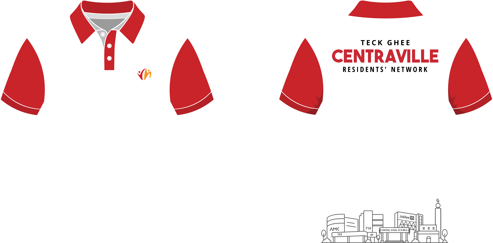
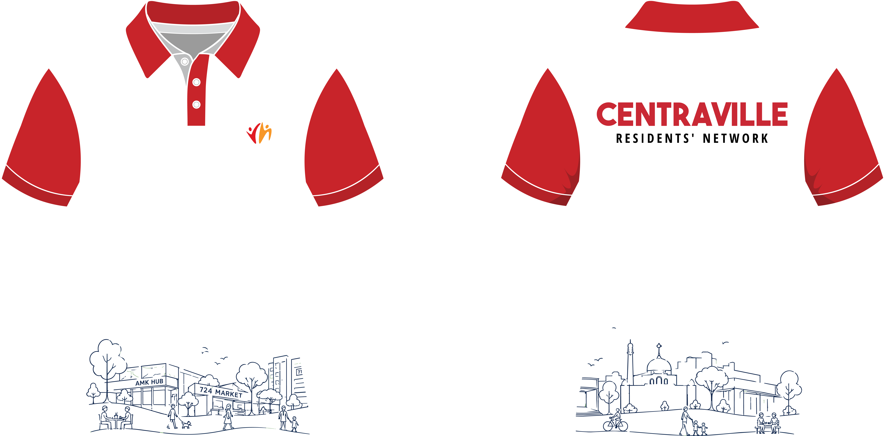

Neighbourhood Identity
Recognisable places. Shared identity.
A shared look for the people who serve our community.

A volunteer polo that feels welcoming, distinctive and connected to Centraville.
Help residents quickly recognise the people who serve their community.
Both directions celebrate Centraville from a different point of view.
Recognisable places. Shared identity.
Everyday moments. Community spirit.
Familiar landmarks create a strong sense of place.

Bold name with a subtle neighbourhood scene.

Key places gathered into one recognisable emblem.
A warm illustration with strong visual character.
People and everyday moments bring the neighbourhood to life.

A continuous scene of places, people and daily life.

A light, friendly scene across the lower back.

Blue and green give the community scene a calmer feel.
Each direction offers a distinct way to represent Centraville.
Both directions are presented equally for discussion with the committee.
For discussion with the
Teck Ghee Centraville RN Committee